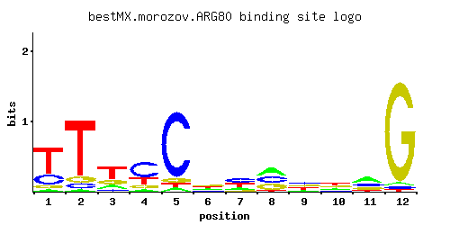

ARG80
YMR042W, ARGRI, ARGR1
Transcription factor involved in regulation of arginine-responsive genes; acts with Arg81p and Arg82p
Best-performing DNA-binding model.

View and copy the recommended matrices ↘
A | 0.035 0.031 0.158 0.074 0.051 0.229 0.176 0.360 0.123 0.199 0.427 0.029 C | 0.244 0.086 0.102 0.564 0.836 0.168 0.373 0.322 0.355 0.147 0.258 0.024 G | 0.101 0.088 0.199 0.133 0.060 0.355 0.102 0.296 0.283 0.326 0.220 0.929 T | 0.620 0.796 0.541 0.229 0.052 0.248 0.350 0.023 0.239 0.328 0.096 0.018
A | 3 3 15 7 5 22 17 36 12 19 42 2 C | 24 8 10 56 83 16 37 32 35 14 25 2 G | 10 8 19 13 6 35 10 29 28 32 22 92 T | 62 79 54 22 5 24 35 2 23 32 9 1
A | -2.21 -2.33 -0.71 -1.46 -1.84 -0.33 -0.60 0.12 -0.96 -0.48 0.29 -2.40 C | 0.30 -0.74 -0.57 1.14 1.54 -0.07 0.73 0.58 0.68 -0.20 0.36 -2.01 G | -0.58 -0.72 0.10 -0.30 -1.10 0.68 -0.57 0.50 0.45 0.59 0.20 1.64 T | 0.66 0.91 0.53 -0.33 -1.82 -0.25 0.09 -2.63 -0.29 0.02 -1.20 -2.88
Alternative candidate matrices 5
Historical matrix candidates from the original ScerTF database. Expand a source to inspect its original logo, scores, and matrix values.
ARG80_AFoat et. al.P = 7.87e-07View matrix ↘
ARG80_BFoat et. al.P = 1View matrix ↘
ARG80Macisaac et. alP = 0.006027View matrix ↘
ARG80_BMorozov et. al.P = 0.02231View matrix ↘
ARG80_CMorozov et. al.P = 0.00715View matrix ↘
Gene-level annotations and interactions.
Genes bound in ChIP-chip experiments 80 genes
YBL019W, YBL074C, YBR028C, YCR018C-A, YCR019W, YDL044C, YDL068W, YDL071C, YDR003W, YDR012W, YDR042C, YDR048C, YDR064W, YDR065W, YDR098C-A, YDR098C-B, YDR131C, YDR160W, YDR210W-D, YDR245W, YDR279W, YDR434W, YDR468C, YDR469W, YDR473C, YDR495C, YEL050C, YER013W, YER041W, YER069W, YER077C, YER115C, YER135C, YER138C, YFL023W, YFL024C, YFR001W, YGL001C, YGL192W, YGL194C, YGL202W, YGL204C, YGR218W, YGR283C, YHR011W, YHR155W, YJL088W, YJL096W, YJL097W, YJL175W, YJL191W, YJL192C, YJR100C, YKL057C, YLR287C, YLR302C, YML031W, YML098W, YML099C, YMR098C, YMR194W, YNL050C, YNL146W, YNL258C, YNR050C, YOL058W, YOL079W, YOL115W, YOL140W, YOR005C, YOR280C, YOR282W, YOR302W, YOR303W, YOR369C, YPL123C, YPL125W, YPL198W, YPL265W, YPR104C
Genes affected by TF deletion 110 genes
YJR048W, YJR085C, YDR222W, YOR033C, YOR377W, YDL067C, YEL076C, YEL017C-A, YOR038C, YPL014W, YPL016W, YMR103C, YOL104C, YOL140W, YDR276C, YGL071W, YGR248W, YGR250C, YMR256C, YPL112C, YDR161W, YFR006W, YGR064W, YMR104C, YOL105C, YPL271W, YDR279W, YER057C, YGR211W, YGR183C, YLR121C, YLR183C, YML084W, YMR285C, YPL111W, YCR021C, YHR001W-A, YLR252W, YOR231W, YOR267C, YPL245W, YDL072C, YOR043W, YOR075W, YER150W, YIL087C, YLR251W, YJR148W, YML100W, YBR230C, YJL088W, YLR438W, YOR074C, YLR380W, YMR084W, YER038C, YGR008C, YIR035C, YLR343W, YLR375W, YOR324C, YDR346C, YIL059C, YNR038W, YPL087W, YOL058W, YGR138C, YGR139W, YKL120W, YDL048C, YOR361C, YOR302W, YHR219W, YLL012W, YLR387C, YNL160W, YOL119C, YOL123W, YOR303W, YER067W, YER069W, YGL090W, YJL166W, YBR054W, YJR046W, YLR297W, YCR031C, YDR055W, YMR001C, YMR034C, YEL037C, YGR173W, YHR135C, YHR137W, YJL076W, YLR049C, YLR452C, YLR427W, YMR181C, YMR211W, YMR250W, YOR026W, YJR135W-A, YLL026W, YPR044C, YLR178C, YLR395C, YDL183C, YML081C-A, YOR150W
Genes supported by both experiments 7 genes
YDR279W, YER069W, YJL088W, YOL058W, YOL140W, YOR302W, YOR303W
Predicted TF–TF partners 3 genes
BAS1, GCN4, RSF2